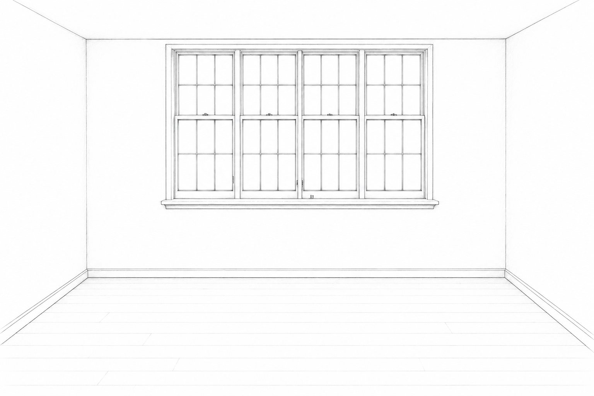

01
Every Space Begins Somewhere
Every design starts with an idea. Before choosing furniture, materials, or colours, I like to think about how a space should feel and the people who will experience it. For me, that is where the design begins.